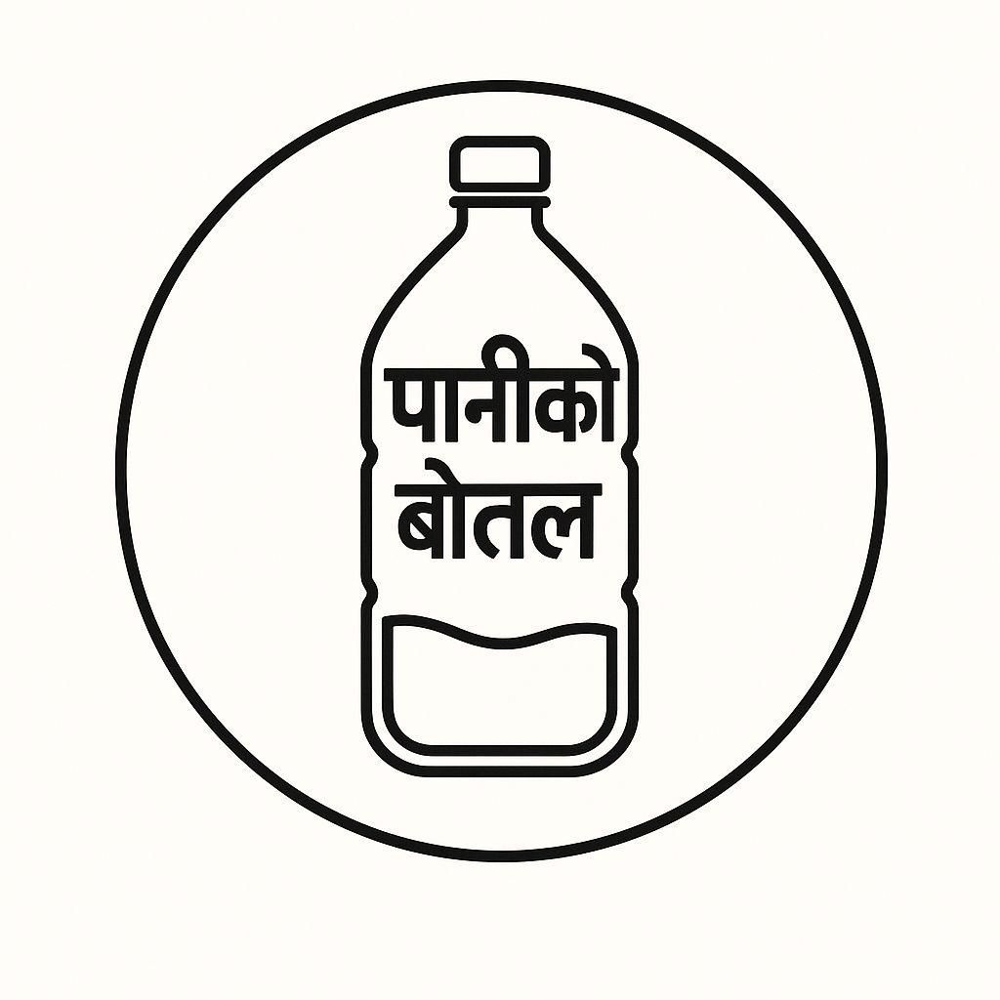
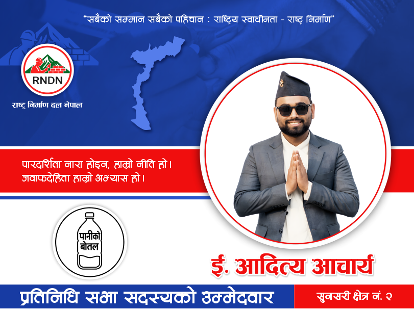

नेपालको लागि संरचनात्मक सुधार घोषणा पत्र
“
नामः आदित्य आचार्य | उमेर: २६ वर्ष
पेशाः अटोमोवाइल तथा मेकानिकल इन्जिनियर
(म आदित्य आचार्य २६ वर्षको अटोमोवाइल तथा मेकानिकल इन्जिनियर, समस्या देखेर भाग्ने होइन इन्जिनियरिङ सोचले समाधान गर्ने पुस्ताको प्रतिनिधि हुँ। म राजनीतिलाई भाषणबाट होइन डिजाइन, डाटा र डेलिभरीबाट बदल्न २०८२ को प्रतिनिधिसभा सदस्य निर्वाचनका लागि सुनसरी क्षेत्र नं. २ बाट उम्मेदवारी दिइएको हो । चुनाव चिह्न पानीको बोतलमा आफ्नो अमूल्य मत दिई सेवा गर्न मौका दिनुहोस् ।)

चुनाव चिह्न: पानीको बोतल

संकटमा परेको संघीय गणतन्त्र
नेपालको संघीय गणतन्त्र आज निर्णायक मोडमा उभिएको छ। यो केवल शासनको विषय होइन संविधानको आत्मा, राज्यको संरचना र जनताको भरोसा माथि भइरहेको गम्भीर परीक्षा हो।
२०८२ को आम निर्वाचन नजिकिँदै गर्दा देशको राजनीतिक वातावरण, २०७२ मा संविधान जारी हुँदा देखिएको आशा र उत्साहले होइन, बरु पुरै संवैधानिक व्यवस्थामाथि परेको गहिरो संरचनात्मक संकटले परिभाषित भएको छ ।
२०८२ मा देखिएका घटनाहरू जनआन्दोलनको नयाँ उभार (जेनजी UPRISING), राज्य पक्षबाट भएको अमानवीय दमन, कलिला नानीहरूको हत्या, त्यस पछि उत्पन्न परिस्थितिको सुनियोजित अपहरण गरी देशभर जेनजीलाई बदनाम गराउने नियतले सबै पुराना शक्तिहरूको घुसपैठ पछि, जनआक्रोशको सिकार भई दशकौं देखि कायम राजनीतिक सहमतिको विघटन र पूर्व प्रधानन्यायाधीश सुशीला कार्कीको नेतृत्वमा अन्तरिम प्रशासनको स्थापनाले हाम्रो राज्य प्रणालीको नाजुकता र असफलतालाई नाङ्गो रूपमा उजागर गरेका छन् ।
आजको नेपाल यस्तो सशर्त संघीयताको अभ्यास अन्तर्गत चलिरहेको छ, जहाँ प्रदेश र स्थानीय सरकारलाई कागजमा अधिकार दिइएको छ तर व्यवहारमा ती अधिकार- केन्द्रित नोकरशाही र सत्ता केन्द्रित राजनीतिक संस्कारद्वारा दबाइएका छन् । संघीयता नाम मात्रको बनेको छ तर निर्णय शक्ति अझै पनि केन्द्रमै थुनिएको छ ।
यो अवस्था न त संविधानसँग मेल खान्छ न त जनताको जनादेशसँग। यदि यही प्रवृत्ति जारी रह्यो भने संघीय गणतन्त्र केवल संरचनात्मक आवरणमा सीमित हुनेछ । जनताको जीवनसँग अझै टाढिँदै जाँदै छ । अब विकल्प स्पष्ट छ- या त हामी संघीय गणतन्त्रलाई व्यवहारमा उताछौं, या त संविधान कागजमा सीमित एउटा असफल प्रयोगमा रूपान्तरण हुनेछ ।
हामी जनताको पक्षमा उभिँदै उत्कृष्ट, जवाफदेही, सुशासित र विकेन्द्रित गणतन्त्र निर्माणको लागि यो घोषणा पत्र प्रस्तुत गर्दछौं ।
संवैधानिक यथार्थवादको घोषणा
यो घोषणापत्र संवैधानिक यथार्थवादको स्पष्ट र निर्भीक घोषणा हो । यसले भन्छ नेपालको दीर्घकालीन संकट कुनै भाग्य, भूगोल वा संस्कृतिको दोष होइन । यो संकट योजनाबद्ध छ । यो संकट जानीजानी बनाइएको हो । कानुनभित्रै राखिएका छिद्रहरू, संघीयताको नाममा गरिएको वित्तीय केन्द्रीकरण र उत्पादन होइन दोहनलाई केन्द्रमा राखिएको राजनीतिक अर्थतन्त्र यसको मूल कारण हुन् ।
आज राज्य जनताको हातमा होइन, पार्टीक्रेसीको (Partocracy) कब्जामा छ । राजनीतिक दलहरूको कार्टेल, जसले राज्यलाई आफ्नो निजी सम्पत्ति जस्तै प्रयोग गरिरहेका छन् । जनताको करबाट संकलित स्रोतहरू जनसेवाका लागि होइन, पार्टी संरक्षण, सत्ताको सौदाबाजी र कार्यकर्ता पालनपोषणको लागि खर्च भइरहेका छन् । यो कार्टेलले आफूलाई कानुन भन्दा माथि राखेको छ । विशेष कानुनी उन्मुक्ति, कमजोर जवाफदेहिता र नियोजित दण्डहीनताको संरचना मार्फत यसले राज्यलाई लुटको संयन्त्र बनाएको छ। यही कारण नेपालमा संविधान छ तर न्याय छैन। निर्वाचन छ तर विकल्प छैन । संघीयता छ तर स्थानीय स्वायत्तता छैन । यो घोषणापत्र यही पार्टीक्रेसी (Partocracy) अन्त्य र राज्यलाई फेरि जनताको हातमा फर्काउने राजनीतिक संकल्प हो।
आर्थिक सन्दर्भ
यस घोषणापत्रको आर्थिक सन्दर्भ गम्भीर छ र यसले तत्काल तथा संरचनात्मक हस्तक्षेपको माग गर्दछ । आर्थिक वर्ष २०८२ को लागि आर्थिक वृद्धि मात्र २.१ प्रतिशत अनुमान गरिएको छ । जुन आर्थिक वर्ष २०८१ मा देखिएको ४.६ प्रतिशत वृद्धिदरको तुलनामा गम्भीर गिरावट हो । सार्वजनिक ऋण हाल GDP को ४४.६ प्रतिशत पुगिसकेको छ । यो ऋण उत्पादनशील पुँजी लगानीको परिणाम होइन बरु विनिमय दरको घाटा, बढ्दो नियमित खर्च र वित्तीय कुप्रबन्धनको उपज हो । यसले राज्यलाई जोखिमपूर्ण ऋण जालमा धकेलिरहेको छ ।
बेरोजगारी संरचनात्मक रूपमा उच्च नै छ । यसको परिणाम स्वरूप देशले आज "मसल ड्रेन" को सामना गरिरहेको छ । जहाँ केवल श्रमिक मात्र होइन, उत्कृष्ट खेलाडी, दक्ष प्राविधिक र सीपयुक्त युवाहरू समेत विदेशी श्रमबजार तर्फ पलायन भइरहेका छन् । यो पलायन केवल रोजगारीको खोज होइन, यो राज्यको नागरिकलाई सम्मानजनक भविष्य दिन सक्ने क्षमता माथिको गहिरो अविश्वासको पनि हो ।
यस घोषणापत्रका निम्न बुँदाहरूले यिनै यथार्थबाट जन्मिएका स्पष्ट संरचनागत चिरा पहिचान गर्दछ । कानुनी व्यवस्था, प्रशासकीय अभ्यास र संस्थागत डिजाइन भित्र जरा गाडेर बसेका ती कमजोरीहरू जसले भ्रष्टाचारलाई सहज बनाएका छन् र सार्वजनिक सेवा प्रवाहलाई अवरुद्ध गरेका छन् ।
यो घोषणा पत्रले अस्पष्ट नाराहरू होइन ठोस कानुनी, विधायकी र संवैधानिक उपचारहरू प्रस्ताव गर्दछ । यसको उद्देश्य स्पष्ट छ- राज्यलाई पार्टीक्रेसी (Partocracy) को कब्जाबाट मुक्त गर्दै, जनउत्तरदायी सक्षम र कार्यशील संवैधानिक गणतन्त्रमा रूपान्तरण गर्नु ।
नीतिगत निर्णय उन्मुक्तिको खारेजी
राज्यको स्रोतहरूको निरन्तर लुटपाट तत्काल रोक्नु र दण्डहीनताका घातक कानुनी छिद्रहरू बन्द गर्दै कानुनको शासन पुनः स्थापना गर्नु।
प्रतिवद्धता
मन्त्रिपरिषद् मार्फत गरिने निर्णयलाई ढाल बनाएर गरिने ठुलो भ्रष्टाचारलाई वैध बनाउने अभ्यासको अन्त्य । अब क्याबिनेट स्तरको दण्डहीनताको युग समाप्त गर्नुपर्छ । जहाँ नीति/निर्णयको नाममा राज्यकोष लुटिन्छ र जिम्मेवार व्यक्तिहरू भ्रष्टाचार मुद्दाबाट उम्काइन्छन् ।
समस्या
नेपालमा हुने ठुलो स्तरको भ्रष्टाचारको सबैभन्दा प्रभावकारी संयन्त्र भनेकै तथाकथित "नीतिगत निर्णय" सिद्धान्त हो । अख्तियार दुरुपयोग अनुसन्धान आयोग ऐन २०४८ को दफा ४ (ख) ले मन्त्रिपरिषद्बाट गरिएको नीतिगत निर्णय माथि अख्तियारले अनुसन्धान गर्न नपाउने व्यवस्था गरेको छ । यसको दुरुपयोग गरी ठुला ठेक्का र जग्गा हस्तान्तरणका निर्णयहरू मन्त्रिपरिषद् पुऱ्याएर भ्रष्टाचारलाई वैधानिकता दिने गरिएको छ ।
यो प्रावधान सुरुमा परराष्ट्र नीति, युद्ध घोषणा जस्ता सार्वभौमिक राजनीतिक निर्णयहरूलाई संरक्षण गर्ने उद्देश्यले राखिएको थियो तर आज त्यही कानुनी व्यवस्था भ्रष्टाचार गर्ने हतियारको रूपमा रूपान्तरण गरिएको छ । खरिद प्रक्रियामा गरिएको ठगी, अवैध जग्गा कारोबार र संगठित लुटलाई ढाकछोप गर्ने भ्रष्टाचारका योजनाहरूलाई जानीजानी मन्त्रिपरिषद् हुँदै पास गराएर राजनीतिज्ञहरूले आफूलाई अभियोजनबाट पूर्ण उन्मुक्ति दिलाउँछन् । यसले देशमा दुई तहको कानुनी प्रणाली निर्माण गरेको छ । तल्लो तहका कर्मचारी र नागरिकलाई कठोर दायित्व तर राजनीतिक नेतृत्वलाई पूर्ण दण्डहीनता, यो संरचनात्मक कमजोरीले वास्तवमा उच्च तहका राजनीतिज्ञहरूलाई अपराधमुक्त गरिदिएको छ र कानुनको शासनलाई खोक्रो बनाएको छ।
यसको जल्दो बल्दो उदाहरण ललिता निवास जग्गा काण्ड हो । पूर्व प्र.म. माधव कुमार नेपाल र पूर्व प्र.म. बाबुराम भट्टराई यसैको आधारमा यो अभियोजन लाग्न सक्दैन भनी आफ्नो पक्ष राखिरहेका छन् ।
समाधान
अख्तियार ऐनलाई संशोधन गरी नीतिगत निर्णयको परिभाषा स्पष्ट पारिनेछ । खरिद प्रक्रिया, जग्गा हस्तान्तरण वा प्राकृतिक स्रोतको इजाजत जस्ता विषयलाई नीतिगत निर्णयको दायराबाट बाहिर राखिनेछ ।
२०४७ को संविधान र अन्तरिम संविधान २०६३ मा समेत कुनै सार्वजनिक पद धारण गरेको व्यक्तिले "अनुचित" कार्य वा भ्रष्टाचारजन्य काम गरेमा अख्तियारको दुरुपयोग भनी व्यवस्था गरिएको थियो । तर २०७२ को संविधानमा यो "अनुचित कार्य" भन्ने वाक्य हटाइयो । जसले गर्दा अनुचित कार्य गर्ने जसको परिभाषा "सार्वजनिक पद धारण गरेको व्यक्तिले जानीजानी वा लापर्बाही साथ के के गरेमा अनुचित कार्य हुने भनी खुलाइएको थियो (जस्तैः आफ्नो अधिकार भित्रको कुनै काम गर्न इन्कार गरेको वा अधिकार नभएको कुनै काम गरेको, कार्यविधि पालना नगरेको, आफ्नो उत्तरदायित्व पन्छाएको आदि थिए) । अब यो प्रावधान नै हटाइदिए पछि सबै कार्यालयमा प्रशासनिक मनोमानी भएर जनताले दुःख पाउनु परेको छ । यो प्रावधानलाई पुनः ऐनमा राखी संशोधन गर्नु पर्दछ । जसले गर्दा हाई लेभल भ्रष्टाचार र आम जनतालाई दिने सास्ती कम भई कानुनको शासनमा विश्वास बढ्नेछ । मन्त्रिपरिषद्बाट हुने ठुला आर्थिक घोटालाहरू अनुसन्धानका दायरामा हुनेछन् ।
खरिद मानकीकरण र Variation Order ठगीको अन्त्य
प्रतिवद्धता
Low Bidding (न्यूनतम कबोल) को बाध्यात्मक व्यवस्था हटाएर गुणस्तरमा आधारित छनोट प्रणाली (QCBS) लागू गरिनेछ ।
संरचनात्मक रोग (समस्या)
सार्वजनिक खरिद ऐन २०६३, सबै भन्दा कम मूल्यको, पर्याप्त रूपमा उत्तरदायी बोलपत्र भन्ने अवधारणामा अत्यधिक केन्द्रित छ, यो कठोर मान्यताले ठेकेदारहरूलाई लागत भन्दा पनि २०/४० प्रतिशत कममा बोलपत्र हाल्न बाध्य बनाउँछ । ठेक्का परेपछि उनीहरूले अप्रत्याशित भूगर्भिक वा प्राविधिक समस्या देखाउँदै धोकेबाजीपूर्ण Variation Order मार्फत नाफा असुल्छन् । यसका अतिरिक्त विशेष परिस्थितिको धारा ६६ लाई प्रतिस्पर्धात्मक बोलपत्र प्रक्रिया नै टार्न दुरुपयोग गरिन्छ । अधिकारीहरूले जानीजानी खरिद ढिलो गराई अन्तिम क्षणमा कृत्रिम आपत् सिर्जना गर्छन् र धारा ६६ प्रयोग गरी आफ्ना नजिकका वा मनपर्ने पक्षलाई अत्यधिक मूल्यमा ठेक्का दिन्छन् ।
प्रमाण:
- कोभिड १९ को महामारीको बेला OMNI Group "काण्ड" मा धारा ६६ दुरुपयोग गरी आपत्कालको नाममा मानक टेन्डर प्रक्रिया टार्दै चिकित्सकीय सामग्री बजार मूल्य भन्दा २०० देखि ३०० प्रतिशत महँगोमा खरिद गरियो । (PPE and Thermometer)
- चमेलिया जलविद्युत आयोजनामा सुरुङ SQUEEZING जस्ता प्राविधिक बहाना देखाउँदै VO को कारण लागत करिब ८ अर्ब बाट बढाएर १५ अर्बसम्म पुऱ्याइयो ।
- २०२४ को खरिद नियमावलीको १३ औं संशोधनमा १००० भन्दा बढी Sick Project मा ढिलाइ कानुनी बनाउँदै असक्षम ठेकेदारहरूलाई व्यावहारिक रूपमा माफी दियो जसले समस्या झन् गहिरियो ।
समाधान (प्रस्तावित कार्य)
अनिवार्य (QCBS) "Quality Cost Based Selection": नेपाली १ अर्ब भन्दा माथिका सबै जटिल पूर्वाधार परियोजनामा QCBS अनिवार्य गर्न PPA संशोधन गर्ने । जसले सबै भन्दा कम मूल्यको अन्धो सिद्धान्त हटाई प्राविधिक क्षमता र विगतको कार्य सम्पादनको आधारमा ठेकेदार चयन गर्न मद्दत गर्दछ ।
Variation Order को सीमाः VO लाई ठेक्काको मूल्यको १० प्रतिशतमा कानुनी रूपमा सीमित गर्ने । (अहिलेको कानुनको दफा ५४ मा भेरिएसन आदेश जति पनि गर्न मिल्ने गरी कानुन बनाइएको छ) यस सीमा लाग्ने लागतको लागि नयाँ टेन्डर वा लाइन मन्त्रालयबाट अलग स्वतन्त्र प्यानलद्वारा फरेन्सिक अडिट अनिवार्य गर्ने ।
विशेष परिस्थितिको कडा परिभाषा: विशेष परिस्थितिलाई घोषित राष्ट्रिय विपत्ति वा युद्धमा मात्र सीमित गर्ने । प्रशासनिक ढिलाइको आधारमा कार्यकारी विवेक प्रयोग गर्ने अधिकार हटाउने । (भ्रष्टाचारको मूल पाटो नै यही हो ।) अपेक्षित परिणाम रुग्ण परियोजना र लागत अतिक्रमणमा उल्लेख्य कमी सस्तो मूल्य भन्दा गुणस्तरलाई प्राथमिकता दिँदै उच्च स्तरीय पूर्वाधार निर्माण हुने
निजामती सेवाको निष्ठाको लागि कुलिङ ऐन
प्रतिवद्धता
निजामती प्रशासन र राजनीतिक दलहरू बिच बनेको भ्रष्ट साठगाँठ तोड्न घुम्ती ढोका प्रणाली अन्त्य गरिनेछ । सेवा अवधिमा राजनीतिक स्वार्थ पुरा गरेबापत अवकाश पछि आकर्षक पद पाउने संस्कृति समाप्त गरिनेछ ।
समस्या
नेपालको निजामती प्रशासन गहिरो रूपमा राजनीतीकरण भएको छ र व्यवहारमा दलगत प्रणालीको विस्तार काम गरिरहेको छ । विशेष गरी सचिव तहका उच्च निजामती कर्मचारीहरूले आफ्नो सेवा अवधिमा राजनीतिक मालिकहरूको पक्षपोषण गर्ने र त्यसको सट्टा अवकाश पछि संवैधानिक पद वा कूटनीतिक पद पाउने लेनदेन आधारित अभ्यास व्यापक छ ।
यस किसिमको भ्रष्टाचारले निजामती सेवाको निष्पक्षता, व्यावसायिकता र तटस्थतालाई गम्भीर रूपमा कमजोर बनाएको छ । संघीय निजामती विधेयकमा "कुलिङ अफ" अवधि राख्ने प्रयासहरू अन्तिम चरणमा गरिएको बदनियतपूर्ण संशोधन मार्फत कमजोर पारिए जहाँ संवैधानिक र कूटनीतिक पदहरूलाई छुट दिइयो । त्यसले सुधारको उद्देश्य नै निष्प्रभावी बनायो ।
प्रमाण: संघीय निजामती सेवा विधेयकको दफा ८२/५ ले अवकाश पछि तत्कालै राजनीतिक, संवैधानिक वा अन्य नियुक्ति लिने व्यवस्था गरेको छ । यही दफाले आफ्नो मालिक सँगको सम्बन्ध जोगाई राख्ने संस्थागत नियतलाई स्पष्ट प्रमाणित गर्दछ ।
प्रस्तावित कार्ययोजना
कुलिङ अफ ऐन लागू गरिने छ । राजपत्र अनंकित प्रथम श्रेणी अधिकृत वा सो भन्दा माथिका सबै निजामती कर्मचारीहरूका लागि अवकाश पछि कम्तिमा ३ वर्ष सम्म कुनै पनि संवैधानिक, कूटनीतिक वा राजनीतिक पद धारण गर्न नपाउने व्यवस्था छुट्टै कानुन मार्फत गर्नु पर्ने छ ।
अपेक्षित परिणाम: निजामती प्रशासनको तटस्थता र व्यावसायिकता मजबुत हुने छ । किन कि कर्मचारीहरूले सेवा अवधि मै अवकाश पछिको जागिरका लागि अडिसन दिनु पर्ने अवस्था अन्त्य हुने छ । अवकाश प्राप्त सचिव र राजनीतिक नेतृत्व बिचको संरक्षण तथा लेनदेन आधारित नेटवर्क भंग हुने छ । राज्य संयन्त्र प्रति जन विश्वास उल्लेखनीय रूपमा वृद्धि हुने छ ।
केन्द्रबाट दिइने अनुदान र वित्तीय सरकार
नेपालमा संघीयता कागजमा छ खातामा छैन । स्थानीय र प्रदेश सरकार सँग राजनीतिक जिम्मेवारी त छ तर पैसा छैन । संघीय सरकारले भ्याट, भन्सार, आयकर जस्ता ९० प्रतिशत भन्दा बढी राजस्व नियन्त्रण गर्दछ । पालिकाले आफ्नै स्रोतबाट (अपवाद बाहेक) ५ देखि २० प्रतिशत सम्म मात्र राजस्व उठाउँछन् । बाँकी ८० देखि ९५ प्रतिशतको लागि केन्द्र तिर हात फैलाउनु पर्छ । अझ खतरनाक कुरा केन्द्रले वित्तीय समानीकरण अनुदान घटाएर सशर्त अनुदान बढाएको छ । यसको अर्थ पालिकाले आफ्नो आवश्यकता होइन काठमाडौँले तोकेको परियोजना मात्र कार्यान्वयन गर्नु पर्ने हुन्छ । यो संघीयता होइन, नयाँ किसिमको केन्द्रीकरण हो। यो समस्या हो र यसको समाधान स्पष्ट छ । हामी अन्तरसरकारी वित्तीय व्यवस्था ऐन संशोधन गर्न आवाज बुलन्द गर्नेछौं ।
पहिलो, कुल अन्तरसरकारी हस्तान्तरणको ५० प्रतिशत अनिवार्य रूपमा वित्तीय समानीकरण अनुदान हुनुपर्छ । दोस्रो, बजेट पारित भए पछि अर्थ मन्त्रालयले बिचमा नै अनुदान काट्न नपाउने कानुनी बन्देज हुनुपर्छ । राजस्व कमी भए संघीय सरकारले आफ्नो खर्च घटाओस्, पालिकाको विकास बजेट होइन। यस बाट केन्द्र कमजोर हुँदैन अहङ्कार कमजोर हुन्छ । सबल संघीयता भनेको सबल पालिका हो । स्थानीय सरकार बलियो भए मात्रै शिक्षा, स्वास्थ्य, रोजगारी जस्ता सेवा जनता समक्ष पुग्छन् । काठमाडौँ बलियो भएर गाउँ कमजोर (पालिका कमजोर) हुनु देश बलियो हुनु होइन । त्यसैले हामी भन्छौँ संघीयता भाषणमा होइन बजेटमा देखिनु पर्छ । पालिका विकासको मालिक हुनु पर्छ, काठमाडौँको ठेकेदार होइन। पैसा जहाँ छ, शक्ति त्यहीं हुन्छ, हामी त्यो शक्ति जनता समक्ष लैजान चाहन्छौँ ।
औद्योगिक प्रवेशमा उदारीकरण (उद्योग दर्तामा स्वचालित अनुमति)
आज नेपालमा उद्योग खोल्नु अधिकार होइन सरकारले दिने कृपा बनेको छ । किनभने औद्योगिक व्यवसाय ऐन २०२० ले अनुसूची १ का उद्योगहरूलाई मन्त्रीको अध्यक्षतामा बनेको बोर्डबाट अनुमति लिन बाध्य बनाएको छ। यसको अर्थ के हो?
- काम गर्न चाहने उद्यमी ठुलो चंगुलमा पर्छ, प्रशासनिक झन्झट बेहोर्न बाध्य हुन्छ ।
- पुराना ठुला खेलाडी सुरक्षित हुन्छन् । नयाँ लगानी रोकिन्छ र भ्रष्टाचारको ढोका खुल्छ ।
सरकारले "एक द्वार सेवा केन्द्र" भन्यो तर व्यवहारमा त्यो निर्णय गर्न नसक्ने डाँक खाना मात्र बनेको छ । लगानीकर्ता अझै पनि वन, भूमि, वातावरण, उद्योग- सबै तिर धाउन बाध्य छन् । के त्यसको समाधान छैन? अवश्य छ, त्यो हो-
समाधान
अनुसूची १ को व्यवस्था खारेजः औद्योगिक ऐन संशोधन गरी रक्षा, सेक्युरिटी प्रिन्टिङ तथा बहुमूल्य खनिज एवं पेट्रोलियम पदार्थ उत्खनन सम्बन्धी उद्योग बाहेकका सबै उद्योगहरूलाई अनुमति श्रेणीबाट हटाई स्वचालित दर्तामा स्थान्तरण गर्ने र कडा पश्च अनुपालन अडिट लागू गर्ने । (OSSC)
एक द्वार सेवा केन्द्रको सशक्तिकरण : यस सम्बन्धी ऐन बनाई निर्दिष्ट औद्योगिक क्षेत्रहरूका लागि OSSC को स्वीकृतिले वन, भूमि र वातावरण जस्ता मन्त्रालयहरूको अलग-अलग स्वीकृतिलाई कानुनी रूपमा अधिरोहण गर्ने व्यवस्था गर्ने । परिणामस्वरूपः देशमा लगानी बढ्छ । रोजगारी सिर्जना हुन्छ । प्रवेश स्तरका भ्रष्टाचार समाप्त हुन्छ । हामी पर्मिसन राज होइन Prosperity Regime चाहन्छौँ ।
दफा ८ सँग सम्बन्धी अनुसूचीहरू (अनुमति लिनु पर्ने उद्योगहरू): हातहतियार, बारुद तथा गोलीगठ्ठा उद्योग सुरक्षात्मक छपाई, मुद्रा तथा सिक्का उत्पादन गर्ने उद्योग । चुरोट, बिंडी, खैनी, सिगार तथा सुर्तीजन्य पदार्थ मुख्य कच्चा पदार्थ हुने वस्तु एवं विद्युतीय चुरोट उत्पादन गर्ने उद्योग । माइक्रो ब्रअरी, बियर, मदिरा वा मदिराजन्य पदार्थ उद्योग । ढुङ्गा, गिट्टी, बालुवा उत्खनन गर्ने उद्योग । रेडियो सञ्चार सम्बन्धी उपकरण उत्पादन गर्ने उद्योग । लिक्विफाइड पेट्रोलियम ग्यास रिफिलिङ गर्ने उद्योग । बहुमूल्य खनिज तथा पेट्रोलियम पदार्थ उत्खनन गर्ने उद्योग । ड्रोनको माध्यमबाट सेवा प्रवाह गर्ने उद्योग । प्रचलित कानुन बमोजिम अनुमति लिनु पर्ने अन्य उद्योग ।
औद्योगिक व्यवसाय ऐन भ्रष्टाचार नाममा संस्थागत भ्रष्टाचार बन्द गरिन्छ
औद्योगिक व्यवसाय ऐनको दफा ५४ ले उद्योगलाई स्पष्ट रूपमा भन्छ, खुद नाफाको १ प्रतिशत रकम (CSR Corporate Social Responsibility) व्यावसायिक सामाजिक जिम्मेवारीमा खर्च गर र त्यो रकमको ५० प्रतिशत स्थानीय दलित, विपन्न, समुदायमा लगानी गर (जस्तो आर्थिक वर्ष २०८१/०८२ मा सुनसरीको कुनै मिलको खुद आम्दानी उसैको रिपोर्ट अनुसार १ अर्ब ६० करोड छ।) उसले इटहरी उपमहानगरपालिका मार्फत CSR खर्च गर्ने हो भने १ करोड ६० लाख स्थानीय गरिबहरूलाई खर्च गर्नु पर्ने छ । तर आज म सिधै सोध्न चाहन्छु त्यो पैसा कहाँ गयो ? जवाफ सरल छ । गरिब कहाँ गएन, कागजी NGO, मन्त्रीको फाउन्डेसन र दलालको खातामा गयो। यस्तो रकम अरबौँ हुन्छ । CSR गरिबका लागि बनाइएको प्रावधान आज संस्थागत भ्रष्टाचारको सुरक्षित नाली बनेको छ । कानुन छ तर कार्यान्वयन शून्य छ । हामी भन्छौँ समस्या उद्योगको होइन समस्या केन्द्रमा बसेर भ्रष्टाचारमा पल्किएको संरचनाको हो । त्यसैले हाम्रो स्पष्ट प्रस्ताव छः औद्योगिक व्यवसाय ऐन र नियमावली संशोधन गर्ने ।
समाधान
CSR को १ प्रतिशत रकम सिधै स्थानीय तहको खाता मार्फत लक्षित वर्गमा र लक्षित उद्देश्यका लागि खर्च गर्ने । हरेक रकमको सार्वजनिक अडिट र डिजिटल ट्रयाकिङ अनिवार्य गर्ने । तब मात्र दलित, विपन्न र लक्षित वर्गले लक्षित उद्देश्यका लागि कानुनमा दिइएका हक वास्तविक रूपमा पाउने छन् । त्यसैले CSR अब भाषण होइन गरिबको घर दैलोमा पुग्नु पर्छ ।
भूमिहीन दलित, सकुम्बासी र वास्तविक किसानको नाममा हुने राजनीति बन्द गरिन्छ
अनुदान वास्तविक किसान सम्म पुऱ्याइनेछ । भूमिहीन दलित, सुकुम्बासीको नाममा आज सम्म समाधान होइन राजनीति मात्र भयो । नेपालको संविधानले प्रत्येक नागरिकलाई आवास र रोजगारी सहितको सम्मानजनक जीवनको अधिकार दिएको छ । यो भोट माग्ने विषय होइन ६ महिनामा सकिने प्रशासनिक कार्य हो । जसको लागि संसद्मा जोडदार आवाज उठाउने कर्तव्य हाम्रो हुने छ । आज नेपालमा हजारौं वास्तविक किसान सँग जमिन छैन । तर उहाँहरू खेतमा पसिना बगाइरहनु भएको छ । तर अनुदान लिन जाँदा खोजिन्छ, जग्गा लालपुर्जा कहाँ छ? यो व्यवस्था अन्यायपूर्ण र किसान विरोधी छ । त्यसैले अब किसानको पुर्जा होइन किसान ID लागू गरिन्छ । जसले खेती गर्छ उही किसान स्थानीय तहको सिफारिसमा Digital Farmer ID Card, सबै अनुदान बिमा सहुलियत ऋण Farmer ID बाट मात्र दिने व्यवस्था हुनु पर्छ । आज किसान खेतमा तर अनुदान कागजमा, त्यसैले हामी त्यो अनुदान खेतमा पुऱ्याउन चाहन्छौं ।
शिक्षा रोजगारी पुल (TVET सुधार)
आज हाम्रो देशको सबै भन्दा ठुलो समस्या भनेको युवा सँग डिग्री छ, सीप छैन, युवा छन्, काम छैन। नेपालमा युवा बेरोजगारी आधिकारिक रूपमा १२.७ प्रतिशत भनिन्छ तर १५ देखि २४ वर्ष उमेर समूहका २२.२७ प्रतिशत युवा बेरोजगार छन् । यो संख्या होइन टाइम बम हो । हाम्रो शिक्षा प्रणाली रोजगारीका लागि होइन सर्टिफिकेट बाँड्ने डिजाइन गरिएको छ।
यहाँ Apprenticeship छैन । Work Place Training छैन। TVET उद्योगको माग अनुसार छैन । CTEVT मा उद्योगको प्रतिनिधि छैन। त्यसैले आज डिप्लोमा भएका युवा देशमा बेरोजगार छन् । उद्योग Skill Manpower खोज्दै विदेश हिँड्छ, यो नै Skill Mismatch हो । यसको एक मात्र दीर्घकालीन समाधान Dual VET System हो । जुन स्विट्जरल्याण्ड, जर्मनी मोडेलमा हुने छ । ७० प्रतिशत तालिम काम गर्ने ठाउँमा ३० प्रतिशत कक्षा कोठामा। सीप किताब बाट होइन फ्याक्ट्री Work Place Site बाट सिकिन्छ । समाधान सबै Polytechnics र TVET इन्स्टिच्युट भएका बोर्डमा इन्डस्ट्रीको प्रतिनिधि अनिवार्य। करिकुलम उद्योगले चाहेको सीप अनुसार बनाउने । हरेक वर्ष लेबर मार्केट Review गर्ने ।
सधैं प्राइभेट सेक्टरलाई दोष दिएर हुँदैन उहाँहरूलाई प्रोत्साहन गर्नु पर्छ । ६ महिना वा बढी Apprentice राख्ने कम्पनीलाई कर छुट र Subsidy दिने, Apprentice लाई Stipend दिने । ऐनमा सुधार गर्ने कानुनले उद्योगलाई Apprentice राख्न बाध्य बनाउनु पर्छ । Apprentice भनेको सस्तो मजदुर होइन यो भोलिको Skill Worker हो । यसले मात्र युवा बेरोजगार हुन र विदेशी पलायन रोक्न सकिन्छ । अब विदेश जाने बाध्यता होइन च्वाइस बन्छ ।
अहिले नेपालमा के छ? स्पष्ट राष्ट्रिय नियम छैन। कतै सित्तैमा काम गराइन्छ । कतै नाम मात्रको भत्ता त्यसैले Apprentice शोषणमा पर्छन्। हाम्रो प्रतिवद्धता Apprentice लाई अनिवार्य न्यूनतम पैसा दिने । Private Company लाई Tax Credit / Subsidy दिने । Apprentice लाई इन्स्योरेन्स / सेफ्टी प्रोटेक्सन दिने । Apprentice सस्तो मजदुर होइन मानव पुँजीमा लगानी हो ।
"Startup nation and Digital Nomad VISA"
प्रतिवद्धता
प्रतिभा पलायन (Brain drain) रोक्दै नेपाललाई नवप्रवर्तन र रिमोट work को क्षेत्रीय केन्द्र बनाउने ।
संरचनात्मक रोग
हाम्रो देशको Startup को नीतिले कर छुटको व्यवस्था गरे पनि "प्रविधिको नवीन प्रयोग" प्रमाणित गर्नुपर्ने अस्पष्ट परिभाषा र पुँजी पहुँचको अभावले नीति कागजमै सीमित भएको छ । Startup हरू आयकर ऐनको दफा ५७ को कारण गम्भीर समस्यामा परेका छन् । जहाँ नयाँ लगानी चरणलाई नै कर योग्य आम्दानी मानिन्छ । यसले Startup को विस्तार र वृद्धिमा प्रभावकारी ढंगबाट असर गर्छ । अर्को तर्फ उच्च इन्टरनेट पहुँच हुँदाहुँदै पनि नेपाल "Digital Nomad" का लागि कुनै कानुनी ढाँचा छैन । जसका कारण विश्वव्यापी रिमोट work को प्रवृत्तिबाट नेपाल वञ्चित भइरहेको छ र विदेशी मुद्रा भित्र्याउने ठुलो अवसर गुमाइरहेको छ।
प्रमाण: आयकर ऐन दफा ५७ ले पुँजी भित्र्याउने प्रक्रियालाई नाफा सरह मानी कर लगाउने भएकोले यो स्पष्ट रूपमा ANTI Startup Provision बनेको छ । Digital Nomad VISA नहुँदा नेपाल विश्वव्यापी रिमोट work Trend बाट लाभ लिन सकेको छैन ।
समाधान
दफा ५७ बाट स्थायी छुटः- दर्ता भएका Startup हरूलाई लगानी चरणको क्रममा आयकर ऐनको दफा ५७ अन्तर्गत कुनै कर दायित्व नलगाउने गरी ऐन संशोधन गर्ने ।
Digital Nomad VISA: विदेशी स्रोत बाट वार्षिक २४ हजार अमेरिकी डलर भन्दा बढी आम्दानी गर्ने Remote Worker का लागि एक वर्षे (नवीकरण योग्य) Digital Nomad VISA सुरु गर्ने आवश्यक नीति/कानुन ल्याउने। नेपाल भित्र कमाएमा कुनै स्थानीय कर नलाग्ने नीति बनाउने (Nomad का लागि)। तर नेपालमै बसोबास र खर्च गरेको प्रमाण अनिवार्य हुनुपर्ने। यो तुरुन्तै गर्न सकिने सुधार हो। यो न्यून लागतमा लागू गर्न सकिन्छ । Digital Nomad भनेको काम खोस्ने होइन डलर ल्याउने मान्छे हो । जसले विदेशी कम्पनीबाट तलब खान्छन्, नेपालमै बसोबास खर्च गर्छन्, होटल, क्याफे, इन्टरनेट, ट्रान्सपोर्ट आदि लोकल अर्थतन्त्रमा सकारात्मक प्रभाव छोड्छन्।
संवैधानिक परिषद्को पुनर्संरचना
यो विषय किन पनि उठाइयो भने अख्तियार दुरुपयोग अनुसन्धान आयोग, निर्वाचन आयोग, न्यायपालिका जस्ता संवैधानिक संस्थाहरूमा प्रमुख तथा अन्य पदाधिकारीहरू नियुक्ति गर्ने संवैधानिक परिषद् हाल कार्यपालिकाको प्रभुत्वमा छ । प्रधानमन्त्री केन्द्रित संरचनाले संवैधानिक निकायहरूमा दलगत भागबन्डा सम्भव बनाएको छ । प्रतिनिधिसभा विघटन भएको बेला सन् २०२० मा ५२ जना पदाधिकारीहरू (अख्तियार प्रमुखमा प्रेम कुमार राई, निर्वाचन आयोगमा राम प्रसाद भण्डारी, मानव अधिकार आयोगमा तप बहादुर मगर लगायत) दलगत भागबन्डामा संसदीय सुनुवाइ नै नगरी भर्ना गरिए जो अहिले पनि कार्यरत छन् । अहिले संविधान अनुसार परिषद् नियुक्ति गर्ने निकाय भनेको प्रधानमन्त्री, विपक्षी दलको नेता, प्रतिनिधिसभाको सभामुख, उपसभामुख, राष्ट्रिय सभाको अध्यक्ष र प्रधानन्यायाधीश रहने व्यवस्था रहेको छ। साथै बहुमतद्वारा निर्णय गर्ने व्यवस्था समेत रहेको हुनाले यसलाई परिवर्तन गर्नु पर्ने आवश्यक छ ।
समाधान
संविधानको धारा २८४ संशोधन गरी परिषद्मा नागरिक समाज वा बार एसोसिएसनले छानेको एक जना पूर्व प्रधानन्यायाधीश राख्नु पर्दछ र नियुक्ति बहुमतको नाममा नभई पूर्ण सहमतिमा मात्र हुने गरी संविधान/कानुन परिवर्तन गर्नु पर्दछ ।
न्याय परिषद्द्मा सुधार (Judicial Council)
प्रतिवद्धता
न्यायपालिकालाई राजनीतिक हस्तक्षेपबाट मुक्त गर्दै न्यायाधीश नियुक्तिमा मौलाएको भागबन्डा प्रणालीको अन्त्य गर्ने ।
संरचनात्मक रोग
संविधानको धारा १५३ अनुसार बनेको न्याय परिषद् ५ सदस्यीय छ । तर ती मध्ये ३ जना प्रभावकारी रूपमा राजनीतिक नियुक्ति हुन् । कानुन मन्त्री, प्रधानमन्त्रीको प्रतिनिधि, बार प्रतिनिधि, जो प्राय दलसँग सम्बन्ध राख्दछन् । अरू दुई जना (प्रधानन्यायाधीश र न्यायाधीश)। यस संरचनाले न्यायाधीश नियुक्ति योग्यता होइन दलगत निष्ठाका आधारमा हुने अवस्था बनाएको छ । (काङ्ग्रेस, एमाले, माओवादी कोटा)
नतिजा: न्यायपालिका या त कार्यपालिका प्रति आज्ञाकारी हुन्छ वा महाभियोगको डरले निष्क्रिय निष्प्रभावी हुन्छ ।
प्रमाण: न्यायाधीश नियुक्तिमा यही ३/५ बहुमतले उच्च अदालत सम्म राजनीतिक क्याडरहरू नियुक्ति भएका छन् यो खुला सत्य हो। यसले बेन्च किनबेच, राजनीतिक प्रभावमा फैसलाहरू हुने र न्याय प्रणालीमा जनविश्वास खस्कँदो छ ।
उपाय
न्याय परिषद्बाट कार्यपालिकाको प्रतिनिधि हटाउने । संविधानको धारा १५३ संशोधन गरी न्याय परिषद्बाट कानुन मन्त्री र प्रधानमन्त्रीको प्रतिनिधि हटाउने, तिनको सट्टा सर्वोच्च अदालतको वरिष्ठ न्यायाधीश वा न्यायिक विज्ञ समावेश गर्ने । सार्वजनिक सुनुवाइ सर्वोच्च अदालतको न्यायाधीशका लागि मात्र होइन उच्च अदालतका न्यायाधीशहरूको लागि पनि लागू गर्ने ताकी पारदर्शिता र उत्तरदायित्व सुनिश्चित होस् ।
जनविश्वासमा आधारित स्वतन्त्र र साहसी न्यायपालिका (Whip प्रणाली खारेजी)
प्रतिवद्धता
संसद्को सार्वभौमिकता पुनः स्थापना गर्ने । सांसदलाई पार्टी मुख्यालयको रबर स्टाम्प होइन, जनताको आवाज बोल्ने वास्तविक प्रतिनिधि बनाउन ।
संरचनात्मक विकृति
संविधानको धारा ८९ (ङ) सांसदको स्थान रिक्तताले सांसदलाई पार्टी ह्विप गरेकै आधारमा पदमुक्त गर्ने व्यवस्था गरेको छ । यस धाराको व्याख्या यति फराकिलो बनाइएको छ कि आज सांसदहरूले आफ्नो पार्टीको गलत नीतिको आलोचना गर्न, नीति विधेयकमा फरक मत राख्न र आफ्नै निर्वाचन क्षेत्रको हितमा बोल्न डराउनु पर्ने स्थिति छ । यसले संसद्लाई बहस र उत्तरदायित्वको थलो होइन पार्टी हाई कमान्डको आदेश पालन गर्ने मेसिनमा रूपान्तरण गरेको छ
प्रमाण: वर्तमान Anti-Defection व्यवस्था स्वयम् संविधानको धारा १०३ को विपरीत छ । जब सांसदलाई स्वतन्त्र रूपले बोल्न र मत राख्न दिइँदैन, त्यो सांसद आफ्नो निर्वाचन क्षेत्रको प्रतिनिधि होइन पार्टीको दूत मात्र बन्दछ ।
समाधान
दल त्यागको (Defection) परिभाषा कडाइका साथ सीमित गर्ने । राजनीतिक दल सम्बन्धी ऐन २०७३ लाई संशोधन गरी केवल यी अवस्थामा मात्र लागू गर्नेः सरकारको विश्वास / अविश्वास सम्बन्धमा र वार्षिक बजेटमा मत विभाजनको बेला। यी बाहेक सबै विधेयक, नीति प्रस्तावमा सांसदलाई आफ्नो निर्णय र निर्वाचन क्षेत्रको हितमा बोल्न वा मतदान गर्न पूर्ण स्वतन्त्रता दिने । परिणाम डर मुक्त बहसपूर्ण संसद् ।
लेखापरीक्षण कार्यालय ऐन (Audit Informant Act) लागू गर्ने
महालेखापरीक्षक आज दाँत नभएको बाघ बनेको छ किनभने उसले अौँको भ्रष्टाचार देखाउँछ तर कारबाही गर्न सक्दैन । आज तथ्य के छ भने महालेखाले सन् २०२४ सम्म ७३३ अर्ब १९ करोड रुपैयाँ बेरुजु देखाएको छ । तर असुली कति ? लगभग नगण्य । महालेखाले अनियमितता पत्ता लगाउँछ तर सरचार्ज गर्न पाउँदैन । मुद्दा हाल्ने अधिकार कार्यपालिका र सार्वजनिक लेखा समिति सँग छ । जुन निकायहरू धेरै जसो आफै भ्रष्टाचार सँग जोडिएका छन् । (हाल सम्मको व्यवहारले) यसलाई नै हामी भन्छौँ Detection र Prosecution छुट्टयाएर बनाइएको प्रणाली, त्यसैले आज भ्रष्टाचार अपराध होइन रिपोर्ट लेख्ने कर्मकाण्डी अभ्यास मात्र बनेको छ ।
अब समाधान के त?
नयाँ Audit Informant Act लागू गर्ने । जसमा महालेखापरीक्षकलाई अनियमित रकम असुल गर्न सरचार्ज आदेश जारी गर्ने अधिकार दिनु पर्छ। Automatic Prosecution (स्वतः अभियोजन): महालेखापरीक्षकले ठहर गरेको भ्रष्टाचारजन्य बेरुजु ६ महिना भित्र फस्र्यौट भएन भने स्वतः अदालतमा मुद्दा जाने हुनु पर्छ । त्यस पछि मात्र बेरुजु डरलाग्दो हुन्छ । महालेखाले बेरुजु प्रतिवेदन मात्र होइन परिणाम पनि ल्याउँछ । ७३३ अर्ब बेरुजु हुने देशमा भ्रष्टाचार समस्या होइन प्रणाली बनेको छ। यसलाई तोड्नु पर्छ ।
Digital लोकतन्त्र विद्युतीय मतदान
प्रतिवद्धता
चुनावी प्रक्रियाको आधुनिकीकरण गर्दै सबै नागरिकका लागि मताधिकार सुरक्षित गर्ने ।
समस्या
हालको कागजी मतदान प्रणाली ढिलो, खर्चिलो र बुथ कब्जा जस्ता अनियमितता प्रति संवेदनशील छ । अझ गम्भीर कुरा वैदेशिक रोजगारीमा रहेका लाखौं श्रमिकहरू जो नेपाली अर्थतन्त्रका मेरुदण्ड हुन्, मतदानबाट वञ्चित छन् । किनभने उनीहरू विदेशबाट मतदान गर्न सक्दैनन् । सर्वोच्च अदालतले The Law And Policy Forum ले सन् २०१७ मा दर्ता गरेको PIL जनसरोकारको मुद्दाको विषयमा सन् २०१८ मै External Voting को आदेश दिइसकेको छ । तर पनि निर्वाचन आयोगले आर्थिक र व्यावसायिक कठिनाइ देखाउँदै कार्यान्वयन गरेको छैन । वैदेशिक श्रमिकहरूको बहिष्करणले संविधानमा प्रत्याभूत गरिएको सार्वभौमिक वयस्क मताधिकारको स्पष्ट उल्लंघन गरेको छ ।
समाधान
वैदेशिक श्रमिकको लागि रिमोट भोटिङ गर्ने। वैध श्रम स्वीकृति भएका नेपाली नागरिकका लागि ब्लकचेनमा (Block Chain) आधारित रिमोट भोटिङ गराउने, यो सम्भव छ । स्वदेशमा VVPAT (मतदाता प्रमाणित कागजी अडिट ट्रेल) सहित डिजिटल भोटिङबाट मतदान गर्ने । यसको कार्यान्वयन सम्भव छ । आवश्यक प्रविधि पहिले देखि नै उपलब्ध छ । यहाँ बाधा प्रविधिको होइन राजनीतिक इच्छाशक्तिको हो ।
परिणाम: वैदेशिक श्रमिकको पूर्ण मताधिकार सुरक्षित। छिटो निष्पक्ष र विश्वसनीय परिणाम।
पूर्वाधार सुधार ऐन लागू गर्ने
यस्तो किसिमको कानुन अस्ट्रेलिया, अमेरिकामा पनि (Security of Critical Infrastructure Act) भनेर लागू गरिएको पाइन्छ । जसको मूल कारण भ्रष्टाचार रोक्नु हो । त्यसैले असारे विकासको संस्कार अन्त्य गरेर दिगो गुणस्तरीय र दीर्घकालीन पूर्वाधार निर्माण सुनिश्चित गर्नु आज नेपालको सन्दर्भमा जरुरी छ । किनभने नेपालमा असारे विकास राष्ट्रिय लज्जाको विषय बनेको छ । आर्थिक वर्षको अन्तिममा बजेट सक्नका लागि वर्षातमा सडक कालोपत्रे गर्ने, हिलो माथि पिच गर्ने प्रवृत्तिले मनसुनमै सडक बग्ने र फलस्वरूप करदाताको पैसा बालुवामा पानी खन्याए झैँ भएको छ । यसको मूल कारण ढिलो बजेट निकासा, काम नगरी बजेट फ्रिज हुने डर र ठेकेदारलाई जवाफदेही बनाउने संरचनाको अभाव हो ।
प्रस्तावित कार्य योजना
नेपालमा आर्थिक वर्षको सुरुवात साउनबाट सारी वैशाखमा गर्नु पर्ने, जसले गर्दा काम सुक्खा मौसममा गर्न सकिन्छ । काम समयमा नै सम्पन्न गर्न सम्भव हुन्छ । Performance Bond Guarantee अनिवार्यः सबै सडक तथा ठुला पूर्वाधार योजनामा कम्तीमा २ वर्षको कार्य सम्पादन Bond अनिवार्य गर्ने। ५ वर्ष सम्म भत्कियो वा असफल भए ठेकेदारले आफ्नै खर्चमा मर्मत गर्ने ।
युवा पलायन किन र यसको समाधान
नेपाल बसाइँसराइमा आधारित निर्भारताको पासोमा फसेको छ । पासो शब्द यसैले भनियो कि यस बाट उम्किन मुस्किल छ । रेमिट्यान्सले लगभग GDP को २७ प्रतिशत हिस्सा ओगटेको छ । सरसरती हेर्दा यसले गरिबी हटाउन मद्दत गरेको जस्तो देखिन्छ । तर सामाजिक मूल्य धान्न अब गारो छ । Brain Drain, परिवारहरूको विखण्डन, गाउँघर रितिँदै जानु र राजनीतिक अस्थिरता यसै पाटोका परिणाम हुन् । २०२४-२०२५ को आँकडा अनुसार दैनिक १७०० देखि २१०० नेपाली युवाहरू अधिकांश खाडी मुलुक तर्फ पलायन भइरहेका छन् । अर्थात् देशले आफ्नो सबै भन्दा ऊर्जाशील युवाहरू हरेक दिन एउटा गाउँ बराबरको संख्यामा गुमाइरहेको छ । प्रश्न उठ्छ- किन? के यो केवल पैसाको लागि हो वा यसको पछाडि अरू संरचनात्मक कारणहरू छन्? खोज यही हो । समस्या पैसामा मात्र सीमित छैन । समस्या शिक्षा, काम, मर्यादाको त्रिकोण भत्किनुमा छ र आश्चर्यजनक रूपमा हामी के पाउँछौं भने हाम्रो शिक्षाको गुणस्तरको Signal फेल भएको छ । Signal Fail भनेको नेपालमा प्राप्त डिग्रीले काम नगर्नु हो । अर्थात् हाम्रो डिग्रीले कुनै बेला योग्यताको बलियो संकेत दिन्थ्यो, आज त्यो अर्थहीन भएको छ । जसको कारण युवाहरू विदेश पलायन हुन बाध्य छन् ।
शिक्षाको गुणस्तरको समस्या नेपालमा रोजगारी पाए पनि तलब अत्यन्त न्यून छ । नेपालको कुल रोजगारीको ८४.६ प्रतिशत अनौपचारिक क्षेत्रमा छ । यसको मतलब नेपालका धेरै जसो कामदारहरू सँग कुनै औपचारिक नियुक्ति पत्र, सामाजिक सुरक्षा वा पेन्सन केही पनि छैन । उनीहरूको भविष्य पूर्ण रूपमा असुरक्षित छ । ज्यालाको अन्तर त झन् कहालीलाग्दो छ । नेपाल सरकारले सन् २०२४ मा तोकेको न्यूनतम पारिश्रमिक रु. १७,२०० थियो तर त्यही बेला कतार वा युएईमा एउटा अदक्ष कामदारले पनि यसको तीन-चार गुणा अर्थात् ६०/७० हजार रुपैयाँ पाउँथ्यो। यो अन्तरले युवाहरूलाई बाहिर जान बलियो आर्थिक तर्क दिन्छ । यहाँ शिक्षा र तलबको कुरा गरियो । यहाँ विदेश जाने प्रक्रिया आफैमा एउटा पासो बनेको छ । सरकारले Free Visa, Free Ticket भन्छ तर वास्तविकतामा यो नीति केवल कागजमा सीमित छ । यो सबै भन्दा दर्दनाक पक्ष हो । यहाँ प्रणालीगत शोषण हुन्छ कामदारको । Free Visa, Free Ticket भने पनि बाहिर जाने युवाहरूले २ लाख देखि ३ लाख सम्म अवैध शुल्क तिरिरहेको भन्ने अध्ययनले पुष्टि गरेको छ र यो तिर्न नै कामदारहरूको विदेश बसाईको १२ देखि १८ महिना बित्छ । यसले एक प्रकारको बाध्यकारी श्रमको अवस्था सिर्जना गर्छ । अब सोच्नुहोस् एउटा १८/२० वर्षको युवा जसको परिवारले घर खेत धितो राखेर ऋण लिएको छ । उसले विदेशमा मालिकले जतिसुकै दुर्व्यवहार गरे पनि 'नाई' भन्न सक्ला? अवश्य सक्दैन । त्यो असम्भव जस्तो हुन्छ । किनभने ऊ एका तर्फ ऋणको बोझले थिचिएको हुन्छ । यो एक किसिमको आधुनिक दासता नै हो । यो चक्रलाई तोड्नु पर्छ । यसमा सरकारले केही गरेको छैन । सरकार बेलाबेला प्रधानमन्त्री रोजगार कार्यक्रम जस्ता अौँका ठुला कार्यक्रम छन् भनेर भन्छ । यो पूर्ण रूपले असफल भएको छ । यसलाई भोट बैंकको साधन बनाइएको छ । यो बडो तामझामका साथ सुरु गरिएको थियो र यसको उद्देश्य पनि रोजगार सिर्जना गर्नु थियो। तर यसको संरचना नै भोट बैंकको लागि बनाइयो। उदाहरणः एउटा कम्प्युटर इन्जिनियरले आफ्नो योग्यता सहित यो कार्यक्रममा सरिक हुँदा त्यहाँ उसलाई नाली सफा गर्न लगाइन्छ । यहाँ नाली सफा गर्ने काम सानो भनिएको होइन, मात्र सीप र श्रम बिच कुनै तालमेल नभएको भनिएको हो । यो दीर्घकालीन योजना भन्दा पनि चुनावको लागि भत्ता बाँड्ने माध्यम बन्यो । यसले योग्य युवाहरूमा सरकार प्रति झन् धेरै अविश्वास र निराशा बढायो । अर्को 'युवा तथा साना व्यवसायी स्वरोजगार कोष' का पनि उस्तै कथा छन् । यो जस्तो संस्थागत असफलताको उदाहरण अरू कतै भेटिंदैन । अनुसन्धानले के कुरा पत्ता लगाएको छ भने यसको चार अर्ब भन्दा बढी रकम दुरुपयोग भयो । सहुलियतपूर्ण ऋण जुन युवा उद्यमीलाई दिनुपर्थ्यो, त्यो पहुँचवाला सुन व्यवसायीका थोक बिक्रेतालाई दिइयो । यो योजना नै भ्रष्टाचारको अखडा बन्यो । कति निराशाजनक छ । यहाँ आशाको किरण कहीं देखिँदैन । समाधान के हो? जुन सतही नभएर प्रणालीगत सुधार सहित हुनुपर्दछ ।
ठोस समाधान
-
✓
ज्याला अनुदान कार्यक्रम: साना तथा मझौला उद्यमहरूलाई औपचारिक बनाउन ज्याला अनुदानको कार्यक्रम। यो कसरी सम्भव हुन्छ भने कुनै कम्पनीले १८ देखि ३० वर्षका युवाहरूलाई औपचारिक नियुक्ति पत्र दिएर राख्छ भने सरकारले पहिलो २ वर्षको लागि रोजगारदाताले तिर्नु पर्ने सामाजिक सुरक्षा कोषको शतप्रतिशत रकम अनुदान दिने । यसले रोजगारदातालाई कुनै अतिरिक्त भार पर्दैन तर युवाले औपचारिक रोजगारी, सामाजिक सुरक्षा र भविष्यका लागि पेन्सन पाउँछन् । यो ८४.६ प्रतिशत अनौपचारिक रोजगारीहरूलाई सम्बोधन गर्ने सिधा र प्रभावकारी उपाय हुन सक्छ ।
-
✓
वैदेशिक रोजगार न्याय विकेन्द्रीकरण: यसको लागि वैदेशिक रोजगार ऐन २०६४ लाई संशोधन गर्नु पर्छ । यो अहिले एक ठाउँ ताहाचल काठमाडौँमा मात्र छ । हाल विदेशमा ठगिएको सिरहाको कुनै युवाले न्याय माग्न काठमाडौँ धाउनु पर्छ । उसको लागि यात्रा र बसाईको खर्च नै अर्को सजाय बन्छ । यसको सट्टा सातै प्रदेशका उच्च अदालतहरूमा वैदेशिक सेवा इजलास स्थापना गर्ने । यसले न्यायलाई पीडितको घरदैलो नजिक पुऱ्याउँछ । छिटो र पहुँच योग्य बनाउँछ । यो नै व्यावहारिक समाधान हो । म यसका लागि आवाज उठाउँछु ।
-
✓
शिक्षा-रोजगार पुल: विश्वविद्यालय अनुदान आयोगले कलेजहरूलाई दिइने संस्थागत अनुदानको ३० प्रतिशत रकम ती कलेजबाट स्नातक भएका विद्यार्थीहरूले १२ महिना भित्र रोजगारी पाएको दरमा (Job Placement Rate) आधारित बनाउने। यदि कुनै कलेजबाट उत्तीर्ण स्नातकले रोजगार पाएन भने कलेजले पाउने अनुदान पनि कम गर्ने । यसले विश्वविद्यालयहरूलाई देखावटी प्रमाणपत्र बेच्ने पसल हुनबाट रोक्छ र बजार सुहाउँदो रोजगारी मुलक शिक्षा दिन बाध्य बनाउँछ । यसको लागि विश्वविद्यालय अनुदान आयोग ऐनलाई संशोधन गर्नु पर्छ । यदि मौका पायो भने त्यो आवाज म उठाउने छु । जब विश्वविद्यालयको भविष्य उसको विद्यार्थीको भविष्य सँग प्रत्यक्ष रूपमा जोडिन्छ, तब मात्र शिक्षा प्रणालीमा वास्तविक सुधार आउँछ ।
-
✓
संस्थागत पुनःडिजाइन: फिलिपिन्सको DMW मोडेल जस्तै “राष्ट्रिय पुनः एकीकरण बैंक" स्थापना गरी फर्किएका श्रमिकलाई केवल तालिम होइन, पुँजी पनि उपलब्ध गराउने । श्रम बजार सुधार निर्माण र आतिथ्य (hospitality) क्षेत्रमा स्तरीकृत न्यूनतम तलब (Tiered Minimum Wage) दिनु पर्ने ।
"यी र यस्ता संरचना सुधारका लागि मैले प्रतिनिधिसभा सुनसरी क्षेत्र नं. २ बाट उम्मेदवारी दिएको छु, मेरो चुनाव चिह्न पानीको बोतल रहेको छ । माथिका उपायहरूले शिक्षा देखि श्रम बजार र न्याय प्रणाली सम्म पुरै संरचनागत प्रणाली नै फेरबदल गर्दछ । मेरो अन्तिम लक्ष्य रोजगारीका लागि विदेश जानुलाई रोक्नु होइन बरु त्यसलाई अवसरका लागि छनोट बनाउनु हो । के नेपालले आफ्नो सबै भन्दा ठुलो सम्पत्ति आफ्नो मानव पुँजीलाई केवल विदेश पठाएर रेमिट्यान्स गन्ने साधन मात्र बनाउने हो वा विदेशमा उहाँहरूले कमाएको सीप, अनुभव र पुँजीलाई राष्ट्र निर्माणमा प्रयोग गर्ने एउटा वृहत् र सम्मानजनक बनाउने प्रणाली हो? यो कुराको छनोटले नै नेपालको आगामी दशकको मार्ग तय गर्ने छ ।"
आदित्य आचार्य
सुनसरी क्षेत्र नं. २
Structural Reform Manifesto for Nepal
“
Name: Aditya Acharya | Age: 26 years
Profession: Automobile and Mechanical Engineer
(I, Aditya Acharya, a 26-year-old automobile and mechanical engineer, am a representative of a generation that does not run away after seeing problems but solves them with engineering thinking. I have filed candidacy from Sunsari Constituency No. 2 for the House of Representatives Member Election of 2082 to change politics not through speeches but through design, data, and delivery. Please cast your invaluable vote on the election symbol water bottle and give me the opportunity to serve.)
Election Symbol: Water Bottle
Federal Democratic Republic in Crisis
Nepal’s Federal Democratic Republic today stands at a decisive turning point. This is not merely a matter of governance; it is a serious test being conducted upon the soul of the Constitution, the structure of the state, and the trust of the people.
As the general election of 2082 approaches, the country’s political environment is defined not by the hope and enthusiasm seen at the time of the promulgation of the Constitution in 2072, but rather by the deep structural crisis imposed upon the entire constitutional system.
The events seen in 2082 — the new surge of public movement (Gen Z Uprising), inhumane repression by the state side, the killing of innocent children, the subsequently created situation being systematically hijacked with the intent to defame Gen Z nationwide after infiltration by all old power groups, the collapse of political consensus maintained for decades after becoming a victim of public anger, and the establishment of an interim administration under the leadership of former Chief Justice Sushila Karki — have exposed in a naked form the fragility and failure of our state system.
Today’s Nepal is operating under the practice of such conditional federalism, where provincial and local governments are given authority on paper, but in practice, those authorities are suppressed by centralised bureaucracy and power-centered political culture. Federalism has become nominal, but decision-making power is still concentrated at the center.
This condition neither matches the Constitution nor the mandate of the people. If this tendency continues, the Federal Democratic Republic will remain limited only to a structural cover. It is becoming increasingly distant from people's lives. Now the choice is clear — either we implement federalism in practice, or the Constitution will be transformed into a failed experiment limited to paper.
Standing on the side of the people, we present this manifesto for building an excellent, accountable, well-governed, and decentralized republic.
Declaration of Constitutional Realism
This manifesto is a clear and fearless declaration of constitutional realism. It states that Nepal’s long-term crisis is not the fault of fate, geography, or culture. This crisis is planned. This crisis has been deliberately created. Legal loopholes kept within the law, financial centralization carried out in the name of federalism, and a political economy centered on extraction rather than production are its root causes.
Today, the state is not in the hands of the people but in the control of Partocracy [rule by a political party cartel]. A cartel of political parties is using the state as if it were its private property. Resources collected from the people’s taxes are being spent not for public service but for party protection, power bargaining, and cadre maintenance. This cartel has placed itself above the law. Through special legal immunity, weak accountability, and a structured system of planned impunity, it has turned the state into a captured mechanism. For this reason, Nepal has a constitution but no justice. There are elections, but no choice. There is federalism but no local autonomy. This manifesto is a political commitment to end this Partocracy and return the state to the hands of the people.
Economic Context
The economic context of this manifesto is serious, and it demands immediate as well as structural intervention. For fiscal year 2082, economic growth is estimated at only 2.1 per cent. This is a serious decline compared to the 4.6 per cent growth rate seen in fiscal year 2081. Public debt has currently reached 44.6 per cent of GDP. This debt is not the result of productive capital investment but rather the outcome of exchange rate deficit, rising recurrent expenditure, and financial mismanagement. This is pushing the state into a risky debt trap.
Unemployment remains structurally high. As a result, the country today is facing a “muscle drain.” Not only laborers but also excellent athletes, skilled technicians, and capable youth are migrating toward foreign labor markets. This migration is not only an employment search; it is also a deep expression of distrust in the state’s capacity to provide a dignified future to its citizens.
The following points of this manifesto identify the same realities and the clear structural cracks born from them. Those weaknesses rooted inside legal arrangements, administrative practices, and institutional design have made corruption easy and obstructed public service delivery.
This manifesto proposes not vague slogans but concrete legal, legislative, and constitutional remedies. Its objective is clear — to free the state from the capture of Partocracy and transform it into a people-accountable, capable, and functional constitutional republic.
Abolition of Policy Decision Immunity
To immediately stop the continuous looting of state resources and to re-establish the rule of law by closing the dangerous legal loopholes of impunity.
Commitment
Ending the practice of legalizing large corruption by using decisions made through the Council of Ministers as a shield. The era of cabinet-level impunity must now be ended. Where, in the name of policy/decision, the state treasury is looted, and responsible persons are exempted from corruption cases.
Problem
The most effective mechanism of large-scale corruption in Nepal is the so-called principle of “policy decision.” Section 4 (b) of the Commission for the Investigation of Abuse of Authority Act 2048 provides that the Commission cannot investigate policy decisions made by the Council of Ministers. Misusing this provision, major contract and land transfer decisions are routed through the Council of Ministers to grant corruption legal validity.
This provision was originally kept to protect sovereign political decisions such as foreign policy and war declaration, but today that same legal arrangement has been transformed into a weapon for corruption. Fraud in procurement processes, illegal land transactions, and organized looting are knowingly passed through the Council of Ministers to cover corruption schemes, and politicians secure full immunity from prosecution. This has created a two-tier legal system in the country — strict liability for lower-level employees and citizens, but full impunity for political leadership.
Evidence: Full impunity for political leadership — this structural weakness has, in reality, made high-level politicians crime-free and has hollowed out the rule of law. A living example of this is the Lalita Niwas land scandal. Former Prime Minister Madhav Kumar Nepal and former Prime Minister Baburam Bhattarai have been arguing on this very basis that charges cannot be brought against them.
Solution
The CIAA Act will be amended to clearly define the meaning of policy decision. Matters such as procurement processes, land transfers, or licenses related to natural resources will be kept outside the scope of policy decisions.
End of Procurement Standardization and Variation Order Fraud
Commitment
By removing the compulsory system of Low Bidding (minimum quotation), a quality-based selection system (QCBS — Quality Cost Based Selection) will be implemented.
Structural Disease
The Public Procurement Act 2063 is excessively centered on the concept of the lowest price, sufficiently responsive bid. This rigid assumption forces contractors to submit bids 20 to 40 per cent below cost. After receiving the contract, they extract profit through deceptive Variation Orders citing unexpected geological or technical problems. In addition, Clause 66 on special circumstances is misused to bypass competitive bidding processes. Officials deliberately delay procurement and create artificial emergencies at the last moment, then use Clause 66 to award contracts at excessively high prices to their close or preferred parties.
Evidence: During the COVID-19 pandemic, in the OMNI Group scandal, Clause 66 was misused to bypass standard tender procedures in the name of emergency and medical materials were procured at prices 200 to 300 per cent higher than market rates. In the Chameliya Hydropower Project, costs were increased through Variation Orders from about 8 billion to up to 15 billion. In the 13th amendment of the 2024 Procurement Regulations, delays in more than 1000 sick projects were legalized.
Solution
Mandatory QCBS: Amend the Public Procurement Act (PPA) to make QCBS mandatory for all complex infrastructure projects above NPR 1 billion. This will remove the blind principle of lowest price and help select contractors based on technical capacity and past performance.
Limit on Variation Orders: Legally limit Variation Orders (VO) to 10 per cent of the contract value. For costs exceeding this limit, a new tender or a mandatory forensic audit by an independent panel separate from the line ministry will be required.
Strict Definition of Special Circumstances: Limit special circumstances only to declared national disasters or war. Remove discretionary executive authority based on administrative delay.
Cooling Act for Integrity of Civil Service
Commitment
End the revolving door system that has created corrupt collusion between the civil administration and political parties. End the culture of receiving attractive posts after retirement in return for serving political interests during service tenure.
Problem
Nepal’s civil administration has become deeply politicized and, in practice is functioning like an extension of the party system. Especially at the secretary level, senior civil servants widely follow a transactional practice — protecting political masters during their service period and receiving constitutional or diplomatic posts after retirement. This type of corruption has seriously weakened the neutrality, professionalism, and impartiality of the civil service.
Evidence: Section 82(5) of the Federal Civil Service Bill allows immediate political, constitutional, or other appointments after retirement. This clause clearly proves the institutional intent to preserve ties with political masters.
Proposed Action Plan
A Cooling-Off Act will be implemented. Through a separate law, all civil servants at Gazetted First Class Officer level or above will be prohibited from holding any constitutional, diplomatic, or political post for at least 3 years after retirement.
Expected Result: Neutrality and professionalism of the civil administration will be strengthened. The protection-and-transaction-based network between retired secretaries and political leadership will be broken.
Grant Distribution from the Center and Fiscal Federalism
In Nepal, federalism exists on paper, not in practice. Local and provincial governments have political responsibility but do not have money. The federal government controls more than 90 per cent of revenue, such as VAT, customs, and income tax. Municipalities raise only about 5 to 20 per cent of their revenue from their own sources. For the remaining 80 to 95 per cent, they must extend their hands toward the center.
An even more dangerous matter is that the center has reduced fiscal equalization grants and increased conditional grants. This means municipalities must implement not their own needs but only the projects specified by Kathmandu. This is not federalism; this is a new form of centralization.
Solution
We will raise a strong voice to amend the Intergovernmental Fiscal Arrangement Act. First, 50 per cent of total intergovernmental transfers must compulsorily be fiscal equalization grants. Second, after the budget is passed, the Ministry of Finance must not be legally allowed to cut grants midway. If revenue decreases, let the federal government reduce its own expenditure, not the development budget of municipalities.
Strong federalism means strong municipalities. Municipalities must be the owners of development, not contractors of Kathmandu. Where money is, power is there — we want to take that power to the people.
Liberalization in Industrial Entry (Automatic Approval)
Today in Nepal, opening an industry has become not a right but a favor granted by the government. The Industrial Enterprises Act 2020 compels industries listed in Schedule 1 to obtain approval from a board chaired by a minister. An entrepreneur who wants to work falls into a large trap and is forced to bear administrative hassles. Old, large players remain protected. New investment is stopped, and the door to corruption opens.
Solution
Abolish Schedule 1 provision: Amend the Industrial Enterprises Act to remove all industries — except defense, security printing, and extraction of precious minerals and petroleum substances — from the approval category and transfer them to automatic registration, and implement strict post-compliance audits.
Strengthening OSSC: Enact a related law to give One Stop Service Center (OSSC) approval legal supremacy for designated industrial areas over separate approvals of ministries such as forest, land, and environment.
Result: Investment increases, employment is created, and entry-level corruption ends. We want not a Permission Raj but a Prosperity Regime.
Institutional Corruption in the Name of Industrial Enterprises Act
Section 54 of the Industrial Enterprises Act clearly states that an industry must spend 1 per cent of its net profit amount on Corporate Social Responsibility (CSR) and invest 50 per cent of that amount in local Dalit and poor communities (for example, according to its own report, A Spinning Mill in Sunsari has a net income in fiscal year 2081/082 of NPR 1 billion 60 crore). If it spends CSR through Itahari Sub-Metropolitan City, it must spend NPR 1 crore 60 lakh on local poor communities. But today I want to ask directly — where did that money go? The answer is simple. It did not go to the poor; it went into paper NGOs, ministers’ foundations, and brokers’ accounts. The CSR provision created for the poor has today become a protected channel of institutional corruption.
Solution
Amend the Industrial Enterprises Act and regulations. The 1 per cent CSR amount must be spent directly through local government accounts for target groups and target purposes. Public audit and digital tracking of every amount must be made mandatory. Only then will Dalit, poor, and target groups actually receive the rights granted in law.
Politics Done in the Name of Landless Dalits, Squatters, and Real Farmers
Subsidies will be delivered to real farmers. Until today, in the name of landless Dalits and squatters, there has been politics, not a solution. Nepal’s Constitution has granted every citizen the right to a dignified life with housing and employment. This is not a vote-seeking subject; this is an administrative task that can be completed in 6 months.
Today in Nepal, thousands of real farmers do not have land ownership. Yet they are sweating in the fields. But when they go to receive subsidies, they are asked — Where is the land ownership certificate? This arrangement is unjust and anti-farmer.
Solution
Farmer ID Implementation: Not a farmer’s land certificate but a Digital Farmer ID Card will be provided based on the recommendation of the local level. Whoever farms is the farmer. All subsidies, insurance, and concessional loans must be provided only through Farmer ID. Today, the farmer is in the field, but the subsidy is on paper; therefore, we want to deliver that subsidy to the field.
Education–Employment Bridge (TVET Reform)
Today, the country’s biggest problem is that youth have degrees but no skills; youth exist, but there is no work. In Nepal, youth unemployment is officially said to be 12.7 per cent, but among the 15–24 age group, 22.27 per cent of the youth are unemployed. This is not a number — this is a time bomb.
Our education system is designed not for employment but for distributing certificates. There is no apprenticeship. There is no workplace training. TVET is not aligned with industry demand. Therefore, today, diploma holders are unemployed while industry searches for skilled manpower abroad — this is Skill Mismatch.
The only long-term solution to this is the Dual VET System — based on the Swiss and German model — 70 per cent training at the workplace and 30 per cent in the classroom.
Solution
Industry representation must be mandatory on the boards of all Polytechnics and TVET institutes. Curriculum must be designed according to the skills demanded by the industry. Companies that keep apprentices for 6 months or more must be given tax exemption and subsidy. The law must be amended to make it mandatory for the industry to keep apprentices.
Commitment
Mandatory minimum payment to apprentices; tax credit/subsidy to private companies; insurance and safety protection to apprentices. An apprentice is not cheap labor — it is an investment in human capital.
Startup Nation and Digital Nomad VISA
Commitment
By stopping brain drain, Nepal can become a regional center of innovation and remote work.
Structural Disease
Although startup policy has provided facilities and exemptions, the requirement to prove “innovative use of technology” under an unclear definition and the lack of capital access have kept the policy limited to paper. Startups are facing serious problems due to Section 57 of the Income Tax Act, where even the new investment stage is treated as taxable income. On the other hand, despite high internet access, Nepal has no legal framework for Digital Nomads.
Evidence: Section 57 of the Income Tax Act treats capital infusion as profit and imposes tax; therefore, this has clearly become an anti-startup provision. Due to the absence of a Digital Nomad VISA, Nepal has not been able to benefit from the global remote work trend.
Solution
Permanent exemption from Section 57: Amend the law so that registered startups bear no tax liability under Section 57 of the Income Tax Act during the investment stage.
Digital Nomad VISA: Introduce a one-year (renewable) Digital Nomad VISA for remote workers earning more than USD 24,000 annually from foreign sources. If income is earned outside Nepal, no local tax will be imposed. However, proof of residence and expenditure within Nepal will be mandatory.
Restructuring of the Constitutional Council
This issue is raised because the Constitutional Council is currently under executive dominance. A Prime Minister–centered structure has made partisan quota-sharing possible in constitutional bodies. During the dissolution of the House of Representatives in 2020, 52 officials were appointed through partisan sharing without parliamentary hearing.
Solution
Amend Article 284 of the Constitution to include one former Chief Justice selected by civil society or the Bar Association in the Council, and change the Constitution/law so that appointments occur only through full consensus, not by majority.
Reform in Judicial Council
Commitment
Free the judiciary from political interference and end the quota-sharing system that has grown in judicial appointments.
Structural Disease
The Judicial Council, formed under Article 153 of the Constitution, has five members. But among them, three are effectively political appointees. This structure has created a condition where judicial appointments are based not on merit but on party loyalty.
Evidence: Through this same 3/5 majority, political cadres have been appointed even up to the High Court. This has led to bench capture and politically influenced decisions.
Remedy
Remove executive representatives from the Judicial Council. Amend Article 153 of the Constitution to remove the Law Minister and the Prime Minister’s representative from the Council and include a senior Supreme Court judge or judicial expert. Public hearings must be applied not only for Supreme Court judges but also for High Court judges.
Independent and Courageous Judiciary & Abolition of Whip System
Commitment
To re-establish the sovereignty of Parliament. To make Members of Parliament real representatives who speak the voice of the people, not rubber stamps of party headquarters.
Structural Distortion
Article 89 (e) of the Constitution provides for the removal of a Member of Parliament from office based on party whip violation. The interpretation of this clause has been made so broad that today Members of Parliament are in a situation where they must fear criticizing their party’s wrong policies. This has transformed Parliament not into a forum of debate and accountability but into a machine that follows the orders of the party high command.
Evidence: The current anti-defection arrangement itself contradicts Article 103 of the Constitution. When a Member of Parliament is not allowed to speak and vote independently, that Member becomes not a representative of the constituency but merely a messenger of the party.
Solution
Strictly limit the definition of defection. Amend the Political Parties Act 2073 so that it applies only in these situations: during votes of confidence/no confidence in government and during annual budget voting. In all other bills and policy proposals, Members of Parliament must be given full freedom to speak or vote according to their decision and constituency interests.
Audit Informant Act Will Be Implemented
Today the Auditor General has become a toothless tiger because it reveals corruption worth billions but cannot take action. The Auditor General detects irregularities but cannot impose surcharges. The authority to file cases lies with the executive and the Public Accounts Committee — bodies that are often linked with corruption.
Solution
Implement a new Audit Informant Act: The Auditor General must be given authority to issue surcharge orders to recover irregular amounts.
Automatic Prosecution: If corruption-related irregularities determined by the Auditor General are not settled within 6 months, the case must automatically go to court.
Digital Democracy — Electronic Voting
Commitment
Modernize the electoral process and secure voting rights for all citizens.
Problem
The current paper-based voting system is slow, expensive, and sensitive to irregularities such as booth capture. Millions of workers in foreign employment are deprived of voting because they cannot vote from abroad. The exclusion of foreign workers is a clear violation of the constitutionally guaranteed universal adult franchise.
Solution
Remote voting for foreign workers: Conduct blockchain-based remote voting for Nepali citizens with valid labor approval.
Digital voting within country: Conduct digital voting with VVPAT (Voter Verified Paper Audit Trail).
Result: Full voting rights secured for foreign workers. Fast, fair, and reliable results.
Critical Infrastructure Reform Act
Asare development [end-of-fiscal-year rush spending] has become a subject of national shame. At the end of the fiscal year, roads are blacktopped during the rainy season just to spend the budget, asphalt is laid over mud, and roads are washed away in the monsoon. The root causes are delayed budget release and absence of a structure that makes contractors accountable.
Proposed Action Plan
Shift the start of the fiscal year in Nepal from Shrawan to Baishakh, so that work can be performed in the dry season and completed on time.
Mandatory Performance Bond Guarantee: Make at least a 2-year performance bond mandatory in all road and large infrastructure projects. If it breaks or fails within 5 years, the contractor must repair it at their own cost.
Youth Migration — Why and Its Solution
Nepal is entangled in a cycle of dependency rooted in migration. Remittance occupies about 27 per cent of GDP. Brain drain, family fragmentation, emptying villages, and political instability are its consequences. Daily 1,700 to 2,100 Nepali youth are migrating for foreign employment. The problem lies in the breaking of the triangle of education, work, and dignity.
Even when employment is obtained in Nepal, wages are extremely low. 84.6 per cent of total employment in Nepal is in the informal sector. The wage gap is alarming. The government says Free Visa, Free Ticket, but in reality, outgoing youth pay illegal fees, creating a form of forced labor condition. This cycle must be broken.
Solid Solution
-
✓
Wage Subsidy Program: To formalize small and medium enterprises. If a company formally appoints youth aged 18–30, the government will provide 100 per cent subsidy of the employer’s required contribution to the Social Security Fund for the first 2 years.
-
✓
Decentralize Foreign Employment Tribunal: Establish foreign employment benches in the High Courts of all seven provinces to bring justice close to the victim’s doorstep.
-
✓
Education–Employment Bridge: Make 30 per cent of the institutional grant provided to colleges by the University Grants Commission based on the job placement rate of graduates. If graduates do not obtain employment, the grant must be reduced.
-
✓
Institutional Redesign: Establish a “National Reintegration Bank” based on the Philippines DMW model to provide returning workers training and capital.
(My final goal is not to stop going abroad for employment but to make it a choice for opportunity rather than a compulsion. Will Nepal make its greatest asset — its human capital — merely a means to send abroad and count remittance, or build a broad and dignified system to use the skills, experience, and capital earned abroad in nation-building? This choice will determine the path of Nepal’s coming decade.)
Er. Aditya Acharya
Candidate, Member of House of Representatives
Sunsari Constituency No. 2